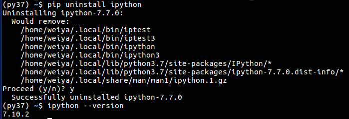

python 相关¶
使用ipython %matplotlib inline¶
参考cnblog
使用%matplotlib命令可以将matplotlib的图表直接嵌入到Notebook之中，或者使用指定的界面库显示图表，它有一个参数指定matplotlib图表的显示方式。inline表示将图表嵌入到Notebook中
另外 % 的一般用法详见 Built-in magic commands
seaborn的使用¶
Matplotlib自动化程度非常高，但是，掌握如何设置系统以便获得一个吸引人的图是相当困难的事。为了控制matplotlib图表的外观，Seaborn模块自带许多定制的主题和高级的接口。 segmentfault
远程访问jupyter¶
jupyter notebook 出错¶

可以通过
rm -r .pki
创建jupyter notebook 权限问题¶

原因是所给的路径的用户权限不一致，jupyter的用户及用户组均为root，为解决这个问题，直接更改用户权限
sudo chown weiya jupyter/ -R
sudo chgrp weiya jupyter/ -R
theano import出错¶

更改.theano文件夹的用户权限
python 查看已安装的包¶
pip list
conda更新spyder¶
(sudo proxychains) conda update spyder
selenium¶
refer to Selenium using Python - Geckodriver executable needs to be in PATH
array operation¶
>>> a = np.sum([[0, 1.0], [0, 5.0]], axis=1)
>>> c = np.sum([[0, 1.0], [0, 5.0]], axis=1, keepdims=True)
>>> a/c
array([[ 1. , 5. ],
[ 0.2, 1. ]])
>>> a
array([ 1., 5.])
>>> c
array([[ 1.],
[ 5.]])
>>> d
array([[ 1, 5],
[ 0, 10]])
>>> d/c
array([[ 1., 5.],
[ 0., 2.]])
>>> d/a
array([[ 1., 1.],
[ 0., 2.]])
Some basics of np¶
Array of Array¶
In [29]: a
Out[29]:
array([[ 83., 11.],
[316., 19.],
[372., 35.]])
In [30]: np.hstack([a, a])
Out[30]:
array([[ 83., 11., 83., 11.],
[316., 19., 316., 19.],
[372., 35., 372., 35.]])
In [31]: b = np.array([a, a])
In [32]: b[1]
Out[32]:
array([[ 83., 11.],
[316., 19.],
[372., 35.]])
Difference between numpy.array shape (R, 1) and (R,)¶
refer to Difference between numpy.array shape (R, 1) and (R,)
正式认识conda¶
参考https://conda.io/docs/user-guide/getting-started.html
为 py3 安装 spyder¶
- 先建一个conda环境bunny，安装python3.4，因为要支持pyside，而经试验3.5+不支持。
- 安装cmake
- pyside出现keyerrror
转向py3.6 不装pyside，而装pyqt5
pip install pyqt5
最终在新建的另一个 conda 环境 snakes 中装好了 Python3.6 及 spyder3，通过下面命令运行就 OK 了。
source activate snakes
spyder3 &
xrange and range¶
基本都在循环时使用，输出结果也是一样的，但略有差异
- range 直接生成一个 list 对象
- xrange 返回一个生成器。性能会比 range 好，特别是很大的时候。
人工鱼群算法-python实现¶
请问phantom-proxy如何设置代理ip¶
python 编码介绍¶
爬虫必备requests¶
Python使用代理抓取网站图片（多线程）¶
python中threading模块详解¶
python 爬虫获取XiciDaili代理IP¶
使用SQLite¶
python urllib2详解及实例¶
使用Selenium¶
参考Python爬虫入门实战七：使用Selenium–以QQ空间为例
Python中将打印输出导向日志文件¶
python 中文编码¶
Python爬虫利器二之Beautiful Soup的用法¶
参考Python爬虫利器二之Beautiful Soup的用法
正则表达式之捕获组/非捕获组介绍¶
python pip 采用国内镜像¶
在win10下设置，参考Python pip 国内镜像大全及使用办法
在用户文件夹下新建pip文件夹，里面新建pip.ini文件
[global]
index-url=http://mirrors.aliyun.com/pypi/simple/
[install]
trusted-host=mirrors.aliyun.com
注意编码格式为utf8无BOM。
conda 在window下设置¶
win10下已经装了anaconda，spyder(2.7)，现想再装上python3，于是利用conda创建一个python3的环境bunny。
conda create --name bunny python=3
切换到bunny环境
activate bunny
pip install spyder3
又拍云的短信平台¶
参考文献
json与字符串¶
payload='{'name': weiya}'
# payload='payload = {'name': weiya}'
换成json
json.loads(payload)
Warning
注意不能采用注释掉的部分。
unquote %7B character¶
参考transform-url-string-into-normal-string-in-python-20-to-space-etc
- python2
import urllib2
print urllib2.unquote("%CE%B1%CE%BB%20")
- python3
from urllib.parse import unquote
print(unquote("%CE%B1%CE%BB%20"))
convert bytes to string¶
b"abcde".decode("utf-8")
json.dumps() 和json.dump()的区别¶
简言之，dumps()和loads()都是针对字符串而言的，而dump()和load()是针对文件而言的。具体细节可疑参见python json.dumps() json.dump()的区别 - wswang - 博客园
字符串前面添加u,r,b的含义¶
u/U:表示unicode字符串 不是仅仅是针对中文, 可以针对任何的字符串，代表是对字符串进行unicode编码。 一般英文字符在使用各种编码下, 基本都可以正常解析, 所以一般不带u；但是中文, 必须表明所需编码, 否则一旦编码转换就会出现乱码。 建议所有编码方式采用utf8
r/R:非转义的原始字符串 与普通字符相比，其他相对特殊的字符，其中可能包含转义字符，即那些，反斜杠加上对应字母，表示对应的特殊含义的，比如最常见的”\n”表示换行，”\t”表示Tab等。而如果是以r开头，那么说明后面的字符，都是普通的字符了，即如果是“\n”那么表示一个反斜杠字符，一个字母n，而不是表示换行了。 以r开头的字符，常用于正则表达式，对应着re模块。
b:bytes python3.x里默认的str是(py2.x里的)unicode, bytes是(py2.x)的str, b”“前缀代表的就是bytes python2.x里, b前缀没什么具体意义， 只是为了兼容python3.x的这种写法
mdx_math安装命令¶
参考manage-your-cms-using-mkdocs
sudo pip install python-markdown-math
python 3 中的 str 和 bytes¶
参考浅析Python3中的bytes和str类型 - Chown-Jane-Y - 博客园
这篇博文讲得很清楚
flask 中 jsonify 和 json.dumps 的区别¶
参考在flask中使用jsonify和json.dumps的区别
另外 flask 的入门文档见
with 语句¶
简言之，“使用with后不管with中的代码出现什么错误，都会进行对当前对象进行清理工作。”
这也就是为什么在用 MySQLdb 的时候，称“With the with keyword, the Python interpreter automatically releases the resources. It also provides error handling.” 详见MySQL Python tutorial - programming MySQL in Python
How can I use Conda to install MySQLdb?¶
参考How can I use Conda to install MySQLdb?
远程连接 mysql¶
首先需要在服务器端，在my.cnf 中注释掉
# bind-address = 127.0.0.1
并且在 mysql 中创建用户并设置权限，如
create user 'test'@'%' identified by 'test123';
grant all privileges on testdb.* to 'test'@'%' with grant option;
参考
- Host ‘xxx.xx.xxx.xxx’ is not allowed to connect to this MySQL server
- How to allow remote connection to mysql
sphinx 相关¶
init¶
@staticmethod 和 @classmethod¶
参考
jupyter 导致 GitHub 语言比例过分倾斜的讨论¶
LInguist is reporting my project as a Jupyter Notebook
Show matplotlib plots in Ubuntu (Windows subsystem for Linux)¶
参考 Show matplotlib plots in Ubuntu (Windows subsystem for Linux)
matplotlib math symbols¶
plt.xlabel(r"\lambda")
refer to Writing mathematical expressions
写入 non-ascii 字符¶
f = open("filename", "w")
write_str = u'''
some non ascii symbols
'''
f.write(write.str)
会报错
'ascii' codec can't encode character
参考 Python: write a list with non-ASCII characters to a text file 采用 codecs.open(, "w", encoding="utf-8") 可以解决需求。
不同 environment 的 jupyter¶
其实不用对每个 environment 安装单独的 jupyter，只有安装好 ipykernel 就好，这样都能从 base environment 中通过 jupyter 来选择不同 kernel，详见 Kernels for different environments
安装 julia 的 kernel¶
> add IJulia
画图 xy 顺序¶
- imshow 中的 origin and extent
Generally, for an array of shape (M, N), the first index runs along the vertical, the second index runs along the horizontal. The pixel centers are at integer positions ranging from 0 to N’ = N - 1 horizontally and from 0 to M’ = M - 1 vertically. origin determines how to the data is filled in the bounding box.
also refer to
matplotlib: coordinates convention of image imshow incompatible with plot
arrays with different size¶
- nested list
[[1,2,3],[1,2]]
- numpy
numpy.array([[0,1,2,3], [2,3,4]], dtype=object)
refer to How to make a multidimension numpy array with a varying row size?
find index of an item¶
>>> [1, 1].index(1)
0
>>> [i for i, e in enumerate([1, 2, 1]) if e == 1]
[0, 2]
>>> g = (i for i, e in enumerate([1, 2, 1]) if e == 1)
>>> next(g)
0
>>> next(g)
2
refer to Finding the index of an item given a list containing it in Python
index a list with another list¶
L = ['a', 'b', 'c', 'd', 'e', 'f', 'g', 'h']
Idx = [0, 3, 7]
T = [L[i] for i in Idx]
refer to In Python, how do I index a list with another list?
getting indices of true¶
>>> t = [False, False, False, False, True, True, False, True, False, False, False, False, False, False, False, False]
>>> [i for i, x in enumerate(t) if x]
[4, 5, 7]
refer to Getting indices of True values in a boolean list
remove by index¶
del
refer to How to remove an element from a list by index?
install python without root¶
use miniconda
refer to How to install packages in Linux (CentOS) without root user with automatic dependency handling?
class ClassName vs class ClassName(object)¶
- In python 2.x, when you inherit from “object” you class is a “new style” class; the non inheriting from “object” case creates an “old style” class.
- In python 3.x, all classes are new style - no need to set the metaclass.
refer to class ClassName versus class ClassName(object)
nbconvert failed: validate() got an unexpected keyword argument 'relax_add_props'¶
refer to nbconvert failed: validate() got an unexpected keyword argument ‘relax_add_props’ #2901
其实我的版本是一致的，但可能由于我进入 Jupyter notebook 方式不一样。
- 一开始，直接从base 进入，然后选择 snakes 的 kernel，导出失败，错误原因如上
- 直接在 snakes 进入 Jupyter notebook，这样可以成功导出
disable default base¶
conda config --set auto_activate_base false
refer to How do I prevent Conda from activating the base environment by default?
actually, this is equivalent to add a line in ~/.condarc
auto_activate_base: false
进程和线程¶
# -*- coding: utf-8 -*-
# https://foofish.net/thread-and-process.html
import os
# 进程是资源（CPU、内存等）分配的基本单位，它是程序执行时的一个实例。
# 程序运行时系统就会创建一个进程，并为它分配资源，然后把该进程放入进程就绪队列，
# 进程调度器选中它的时候就会为它分配CPU时间，程序开始真正运行。
print("current process: %s start..." % os.getpid())
pid = os.fork()
if pid == 0:
print('child process: %s, parent process: %s' % (os.getpid(), os.getppid()))
else:
print('process %s create child process: %s' % (os.getpid(), pid) )
# fork函数会返回两次结果，因为操作系统会把当前进程的数据复制一遍，
# 然后程序就分两个进程继续运行后面的代码，fork分别在父进程和子进程中返回，
# 在子进程返回的值pid永远是0，在父进程返回的是子进程的进程id。
# 线程是程序执行时的最小单位，它是进程的一个执行流，
# 是CPU调度和分派的基本单位，一个进程可以由很多个线程组成，
# 线程间共享进程的所有资源，每个线程有自己的堆栈和局部变量。
conda package 的版本号不匹配¶
在用 anaconda3 新建 py37 环境后，安装 spyder，但是运行时弹出

而用 conda list | grep qtconsole 检查发现
qtconsole 4.6.0 py_0
隐隐约约感觉是装了多个版本，想卸载掉错误的版本，但都没找到 qtconsole 怎么查看版本号。然后 Google 发现另外一个类似的问题，
Getting wrong version of packages using Conda
于是我也去检查了 ipython 的版本，发现
$ ipython --version
7.7.0
而
$ conda list | grep ipython
ipython 7.10.2 py37h39e3cac_0
同样存在版本号不一致的问题。
所以按照评论的建议，用
pip uninstall ipython
首先解决了 ipython 的版本号不一致的问题。

受此启发，用
pip uninstall qtconsole
解决了 qtconsole 的问题。
Kite 使用体验¶
Copilot 一直 detect 不出 spyder，只有刚开始装的时候检测到了，但那时候也没有起作用。而 kite 本身一直在 spyder 右下角的状态栏中。
remote ipython kernel¶
一直想玩 jupyter 的远程 ipython kernel 连接，这样可以减轻本机的压力。
这两篇介绍得很详细，但是最后设置 ssh 那一步总是报错，总是说无法连接。
- Connecting Spyder IDE to a remote IPython kernel
- How to connect your Spyder IDE to an external ipython kernel with SSH PuTTY tunnel
因为我是直接把 id_rsa.pub 文件当作 .pem 文件，但如果我换成密码登录后就成功了。
而如果直接命令行操作，则就像正常 ssh 一样，也会成功。
所以中间的差异应该就是 .pem 与 id_rsa.pub 不等同。具体比较详见 what is the difference between various keys in public key encryption
usage of yield¶
We should use yield when we want to iterate over a sequence, but don’t want to store the entire sequence in memory.
More details refer to When to use yield instead of return in Python?
An example gave in Squaring all elements in a list
>>> def square(list):
... for i in list:
... yield i ** 2
...
>>> square([1,2])
<generator object square at 0x7f343963dca8>
>>> for i in square([1,2]):
... print(i)
...
1
4
along with other methods to square a list,
>>> list = [1, 2]
>>> [i**2 for i in list]
[1, 4]
>>> map(lambda x: x**2, list)
<map object at 0x7f3439642f60>
>>> for i in map(lambda x: x**2, list):
... print(i)
...
1
4
>>> ret = []
>>> for i in list:
... ret.append(i**2)
...
>>> ret
[1, 4]
‘Uninstalling a distutils installed project’ error¶
pip install –ignore-installed ${PACKAGE_NAME}
refer to ‘Uninstalling a distutils installed project’ error when installing blockstack #504
*args and **args¶
*args: pass a non-keyword and variable-length argument list to a function.**args: pass a keyworded, variable-length argument list, actuallydict
refer to *args and **kwargs in Python, and Asterisks in Python: what they are and how to use them
One example,
def feature_size(self):
return self.conv3(self.conv2(self.conv1(torch.zeros(1, *self.input_shape)))).view(1, -1).size(1)
where *self.input_shape aims to unpacking something like [3, 4, 5] to 3, 4, 5.
Function Annotations¶
When I am writing the custom loss function in XGBoost, there are some new syntax in the example function,
def squared_log(predt: np.ndarray,
dtrain: xgb.DMatrix) -> Tuple[np.ndarray, np.ndarray]:
what is the meaning of : and ->. Then I found that they are functional annotations.
By itself, Python does not attach any particular meaning or significance to annotations.
The only way that annotations take on meaning is when they are interpreted by third-party libraries.
No Tuple here¶
Actually, seems no need to add Tuple before [np.ndarray, np.ndarray], which will throws an error
NameError: name ‘Tuple’ is not defined
Ohhh, to avoid such problem,
from typing import Tuple, Dict, List
refer to custom_rmsle.py#L16
<U5¶
I met this term in How to convert numpy object array into str/unicode array?
I am confused about the official english documentation
A Chinese answer solves my question,
<表示字节顺序，小端（最小有效字节存储在最小地址中）U表示Unicode，数据类型5表示元素位长，数据大小
the i-th row in pandas¶
df_test.iloc[0]
the first argument in sys.path.insert()¶
But for
sys.pathspecifically, element 0 is the path containing the script, and so using index 1 causes Python to search that path first and then the inserted path, versus the other way around when inserted at index 0.
refer to First argument of sys.path.insert in python
interactive mode¶
https://stackoverflow.com/questions/47273107/how-to-pause-a-for-loop-and-waiting-for-user-input-matplotlib
https://matplotlib.org/3.1.1/users/event_handling.html
print numpy objects without line breaks¶
import numpy as np
x_str = np.array_repr(x).replace('\n', '')
print(x_str)
refer to How to print numpy objects without line breaks
-m¶
python -m lets you run modules as scripts, and it reflects the motto–“batteries included”. Here are some powerful features/functions, such as creating a simple http server
python -m SimpleHTTPServer 80
test and coverage¶
- Coverage.py
- coveralls
combine the coverage from julia by merging the resulted json file, which need coveralls-lcov to convert LCOV to JSON.
refer to:
镜像¶
通过 conda 安装镜像在 .condarc 中设置, 如在内地可以用清华的镜像，而通过 pip 详见 pypi 镜像使用帮助，临时使用可以运行
pip install -i https://pypi.tuna.tsinghua.edu.cn/simple some-package
subplots 的间距¶
plt.tight_layout() 可以调节间距，如果有必要，可以带上参数，比如，B spline in R, C++ and Python
plt.tight_layout(pad = 3.0)
scatter size¶
the size is defined by the area, pyplot scatter plot marker size
key in sorted¶
As said in Key Functions – Sorting HOW TO, the key function is to specify a function to be called on each list element prior to making comparisons.
sorted("This is a test string from Andrew".split(), key=str.lower)
and met such technique in 4ment/marginal-experiments
TypeError: unhashable type: 'list'¶
convert a nested list to a list¶
Python 3.6.9 (default, Apr 18 2020, 01:56:04)
[GCC 8.4.0] on linux
>>> set([1,2,3,4,[5,6,7],8,9])
Traceback (most recent call last):
File "<stdin>", line 1, in <module>
TypeError: unhashable type: 'list'
>>> set([1,2,3,4,(5,6,7),8,9])
{1, 2, 3, 4, (5, 6, 7), 8, 9}
hash a nested list¶
>>> hash([1, 2, 3, [4, 5,], 6, 7])
Traceback (most recent call last):
File "<stdin>", line 1, in <module>
TypeError: unhashable type: 'list'
>>> hash(tuple([1, 2, 3, [4, 5,], 6, 7]))
Traceback (most recent call last):
File "<stdin>", line 1, in <module>
TypeError: unhashable type: 'list'
>>> hash(tuple([1, 2, 3, tuple([4, 5,]), 6, 7]))
-7943504827826258506
>>> hash([1, 2, 3, tuple([4, 5,]), 6, 7])
Traceback (most recent call last):
File "<stdin>", line 1, in <module>
TypeError: unhashable type: 'list'
refer to Python: TypeError: unhashable type: ‘list’
__getitem__¶
I came across the usage of __getitem__ here, which seems powerful, and not only accept
T[x, y]
also supports
T[[x, y]]
in my code. Then I found more detailed explanation for the usage.
temporary proxy for pip¶
pip install -i https://pypi.tuna.tsinghua.edu.cn/simple some-package
详见 https://mirrors.tuna.tsinghua.edu.cn/help/pypi/
新式类 vs 经典类¶
- python 2.x 中，默认为经典类，只有当写成
class A(object)才成为新式类 - python 3.x 中，默认为新式类
unit test in python¶
explain the schematic of unittest framework in python: Running unittest with typical test directory structure
conda 指定 env 路径¶
如果直接在创建时通过 -p 指定路径
conda create -p ... python=x.x
注意如果指定路径，则不需要 --name， 因为默认会将路径最后的文件名看成是 env 的 name。
则 activate 的时候需要加上整个路径。
再创建之前可以先在 .condarc 中的 env_dirs 项下添加指定的路径。